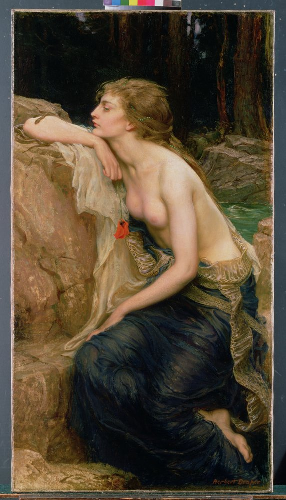

- Vector69Com.png)
Artes da Era Vitoriana
A arte vitoriana moldou o reinado da Rainha Vitória na Inglaterra de 1837 a 1901. Os Pré-Rafaelitas sob Dante Gabriel Rossetti opuseram-se às representações claras e frias do classicismo que prevalecia até então: ele e seus companheiros de campanha William Holman Hunt, Edward Burne-Jones e John Everett Millais se orientaram no estilo da Idade Média e da Renascença e introduziram a representação naturalista de pessoas e paisagens que era comum na época em suas obras. Os motivos populares incluíam cenas antigas e religiosas, assim como figuras míticas, e o retrato também era muito importante.
Além dos pré-rafaelitas, outros estilos influenciaram a arte da época vitoriana: Frederic Leighton, cujas pinturas mais conhecidas retratam mulheres jovens em cenas antigas e bíblicas, considerou-se um representante do Neoclassicismo. Entre os representantes do Realismo Acadêmico estava Lawrence Alma-Tadema, que se dedicou principalmente à pintura histórica. Influências Pré-Rafaelitas, Classicistas e Impressionistas podem ser encontradas nas pinturas de John William Waterhouse.
Entre as obras mais famosas da época vitoriana estão "Beata Beatrix" de Dante Gabriel Rossetti, "A Luz do Mundo" de William Holman Hunt e "Ophelia" de John Everett Millais. Com a emergência do modernismo clássico no início do século XX, a arte vitoriana recuou para segundo plano; só nos anos 70 é que experimentou um renascimento histórico da arte.
Aprecie algumas pinturas em tela
.jpg) Herbert James Draper - The water nymphnFrancais La Nymphe des eauxn
Herbert James Draper - The water nymphnFrancais La Nymphe des eauxn .jpg) Herbert James Draper - Flying Fish 1910
Herbert James Draper - Flying Fish 1910 .jpg) Herbert James Draper - Flying Fish 1910
Herbert James Draper - Flying Fish 1910 .jpg) Herbert James Draper - Ulysses and the Sirens
Herbert James Draper - Ulysses and the Sirens -  Herbert_James_Draper_-_Lamia_c1909
 (1).jpg) Richard Dadd - Caravanserai at Mylasa Turkey 1845
Richard Dadd - Caravanserai at Mylasa Turkey 1845 .jpg) Richard Dadd - The Fairy Fellers Master-Stroke
Richard Dadd - The Fairy Fellers Master-Stroke - Richard_Dadd_-_Gaming_mid_19th_century
- Richard_Dadd_-_Titania_Sleeping_-_(MeisterDrucke-318984)
.jpg) Wilfrid Williams Ball - Dordrecht
Wilfrid Williams Ball - Dordrecht .jpg) Wilfrid Williams Ball - Street Scene Rotenburg showing the Weisser Turm and the Jude
Wilfrid Williams Ball - Street Scene Rotenburg showing the Weisser Turm and the Jude .jpg) Wilfrid Williams Ball - The Deanery Winchester
Wilfrid Williams Ball - The Deanery Winchester .jpg) William Blake - Antaeus setting down Dante and Virgil in the Last Circle of Hell
William Blake - Antaeus setting down Dante and Virgil in the Last Circle of Hell.jpg) William Blake - The Great Red Dragon and the Beast from the Sea
William Blake - The Great Red Dragon and the Beast from the Sea .jpg) William Edward Frost - A Nereid 1856
William Edward Frost - A Nereid 1856 .jpg) William Edward Frost - The Three Graces 1856
William Edward Frost - The Three Graces 1856 .jpg) William_Blake_-_Satan_Arousing_the_Rebel_Angels_1808
William_Blake_-_Satan_Arousing_the_Rebel_Angels_1808- William_Edward_Frost_-_Panope_1862
- William_Edward_Frost_-_Two_Gentlemen_in_a_Gig_drawn_by_a_Bay_Cob_on_the_way_to_shoot_with_their_Pointer
Herbert_James_Draper_-_A_Water_Baby_c1900_(oil_on_canvas)